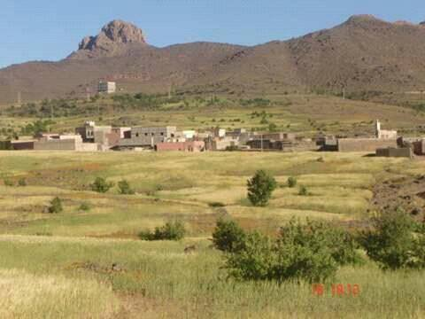

بعض دواوير المنطقة
OGOUZ
TAZARINE
IMIWNARIM
TIZIRT

IMNI
AMAL

قبيلة سوسية تقع بمنطقة سوس الشرقية تابعة لإقليم تارودانت جهة سوس ماسة، وتحدها شرقا قبيلة إينداوزال، وشمالا قبيلة أرغن، وغربا قبيلة إداوزدوت وقبيلة إداوكنسوس، وجنوبا قبيلة تاكموت قبيلة اندونضيف تحتوي جماعتين قراويتين جماعة اضار تتكون من 64 دوار و جماعة امي نتيارت 34 دوار وهي قبيلة شاسعة مترامية الاطراف مركبة من عدة فرق كل فرقة تضم عددا من الدواوير و هذه القبيلة مكونة من ثلاثة فرق
- آيت القايد :دوار تنكارف، دوارتيواضل، دوارثلاث نتيواضل، دوار أوزون،دوار أركون، دوارامي نواركون ،دوار تيفركي،دوار تنومي،دوار امكون .
-آيت خلف او تكراش :دوار أكرضان،دوار تاوريرت، دوارامالو، اوكريس، دوارتمسولت، دوارامي نتزكي،دوار تيدقان.
-آيت القاسم : دوارايت حساين، دوارانامر ايت كربان، دوار اكجكال، دوارفلوز،دوار الزوية،دوار اكنس نيسلي، دوارتزكي.
-آيت سليم : دوار اكني ومزيل،دوار اكني اكرام، دوارتلوا، دوار امينو، دوار تزلفين، دوار تمكدرت
- دوساون : دوار منداس، دوار طرب،دوار تعنكومت،دوار تزكي.
- ادوا لميت : دوار اغير،دوار تركيتين، دوار ادوا لميت.
- اسيف نمضار : دوار اورياك،دوار آيت ابورك، دوار معمور، دوار افرني،دوار اسكان،دوار اكراكا، دوار اكسرن،دوار دوزرو، دوار تزي،دوار فومليل،دوار تكديرت،دوار انزور، دوار امي نتلات.
- لاون : اسيف لاون،دوار تكنزا .دوار اكوز، دوار امونارم،دوار بركن، دوار تمدا ايكرضان،دوار اغير اكرضان.
- ادا مزال : دوار افكيس، دوار تزغت، دوار تكليلت، دوار تيليلن.
- اغالن وسلان: دوار تاوريرت،دوار اصولي، دوار ايت اعزى، دوار اكني، دوار وسلان.
-آيت فناس : دوار تسولت،دوار انجران، دوارامري،
-آيت نفوت : دوار افركال،دوار تدنست، دوار تزيرت،دوار تزي دوار امسنكرف.
- ادوا كرفض : دوار ايت كين،دوار ارتم،دوار لمدينت، دوار تكراكرا.
- انشادن : دوار وزلان، دوار انامر،دوار امني دوار وين تطاين،دوار تزارين، دوار تفلسين، دوار اضار، دوار تزرت، دوار ايت موكا،دوار ثلاث نومان، دوار تمدجوت، دوار امال دوار وين لخير،دوار تكناتين، دوار تلات، دوار اغير نبزي .
تتميز القبيلة بهويتها الامازيغية حيت ان السكان متشبتون بعادات وتقاليد أجدادهم، ندكر منها احواش الذي يعد من التراث الشعبي الامازيغي حيت انه يقام في الحفلات ، فهي إن شئنا سهرة موسيقية راقصة ولقاء يدعم أواصر التفاهم وروابط المودة والتآزر، في أسلوب جماعي مشترك، وهو مدرسة اجتماعية تلقن القيم والنظام والتعاون وتنمي الوعي الاجتماعي لدى الناس بحقوقهم وواجباتهم نحو المجتمع، ونحو بعضهم البعض، كما تربي الذوق، وتربي الإحساس بالجمال والقبح في السلوك والمعاملات، من خلال ما يطرحه الشعراء من قضايا وأفكار في أسلوب جماعي ينم عن عراقة ممارسة التقاليد اليومية
تشتهر قبيلة اداونضيف في هذا الباب بوجود عدد لابأس به من المخازن الجماعية التقليدية المعروفة محليا باسم ( اكادير جمع اكودار).هذه البنايات العمومية المشيدة بالتراب والحجارة والخشب غالبا ما تبنى بتظافر جهود أهالي القرية أو القبيلة بتصميم هندسي على شكل مربع، تعلو زواياه أبراج للمراقبة أو على شكل مستطيل بلا أبراج،و توظف في تخزين الحبوب والغلال وكانت فيما مضى توظف لتخزين الاسلحة والحلي والوثائق المهمة كما ان هذه المؤسسات الاجتماعية كانت ولا تزال تتوفر على قوانين اساسية ويسهر على ادارتها وتسييرها مجلس يدعى انفلاس غير أن معضم هذه المخازن تعرضت مرافقها للتلاشي والاندثار بفعل الإهمال.
تتجلى الوظيفة التربوية والتعليمية في الدور الذي لعبته المدارس العلمية العتيقة في الحفاظ على تعاليم الدين الإسلامي الحنيف، وتأصيل القيم الأخلاقية النبيلة، بالإضافة إلى الحفاظ على الوحدة المذهبية للأمة، والمتمثلة في المذهب المالكي، فضلا عن مساهمتها الأصيلة في نشر اللغة. حيت أدت المدارس العتيقة بالمنطقة دورا مهما يتجلى في تلقين العلوم القرآنية والفقهية ومساهمتها في تكوين فقهاء ووعاظ لترسيخ مبادئ الدين الاسلامي الحنيف للحفاظ على التقاليد الدينية السمحة. وتوجد بمنطقة اداونضيف مدرسة محمد النضيفي للتعليم العتيق المتواجدة في( أزون) وتتكلف بها جمعية إدونضيف للتعليم
في اطار التطور الذي يعرفه المجتمع المحلي ، ومسايرة لمفهوم الجديد للسلطة ، ووعيا من ابناء المنطقة بجدوى العمل الجمعوي والتشاركي وبلورته على ارض الواقع لانجاز بعض المشاريع ذات الصبغة التنموية ، عرفت المنطقة تأسيس عدد من الجمعيات التنموية ،حيت ان كل قرية أسست جمعيتها الخاصة ،وهناك جمعيات القبيلة نذكر منها على الخصوص :
- - جمعية ادونظيف للتنمية والتعاون
- - جمعية محمد نظيفي للتعليم العتيق
- - جمعية صناع الخير
يشغل هذا المجال المناطق المرتفعة الغير المستغلة زراعيا وقد يزدوج هذا النشاط بالزراعة نظرا لما يحققه ذلك من تكامل فبعد عملية الحصاد ترعى الاغنام بقايا الحشائش والسنابل، وتجدر الاشارة الى ان هذا القطاع يعرف تراجعا ملحوظا نظرا لتزايد حدة الجفاف وتزايد الرقعة المزروعة على حساب الاراضي المزروعة خاصة بعد تكثيف غرس اشجار اللوز في مناطق كانت تستغل رعويا.الى جانب ذلك فإن بعض السكان يقومون بتربية بقرة او اثنتين في المنازل حيت تقوم النساء بجلب الأعشاب في فصل الربيع وتخزينها للحاجة
يعتبر النشاط الفلاحي من أهم آلأنشطة التي يزاولها سكان المنطقة رغم قساوة الظروف الطبيعيــــــة ووعورة التضاريس والمناخ الجاف كل هذه عوامل تؤثر سلبا على الإنتاجية ،فهذا النشاط التقليدي المعيشي الذي يعتمد اساساً على الوسائل التقليدية
اثنـــــاء القيام سواء بعملية الحرث او الحصاد حيث يعتبر الشعير المنتــــــوج الزراعـــــــي الوحيد في المنطقة وتقوم زراعته بوريا مرة واحدة في كل سنة.اما المغروسات الشجرية فاغلبها اشجار اللوز.